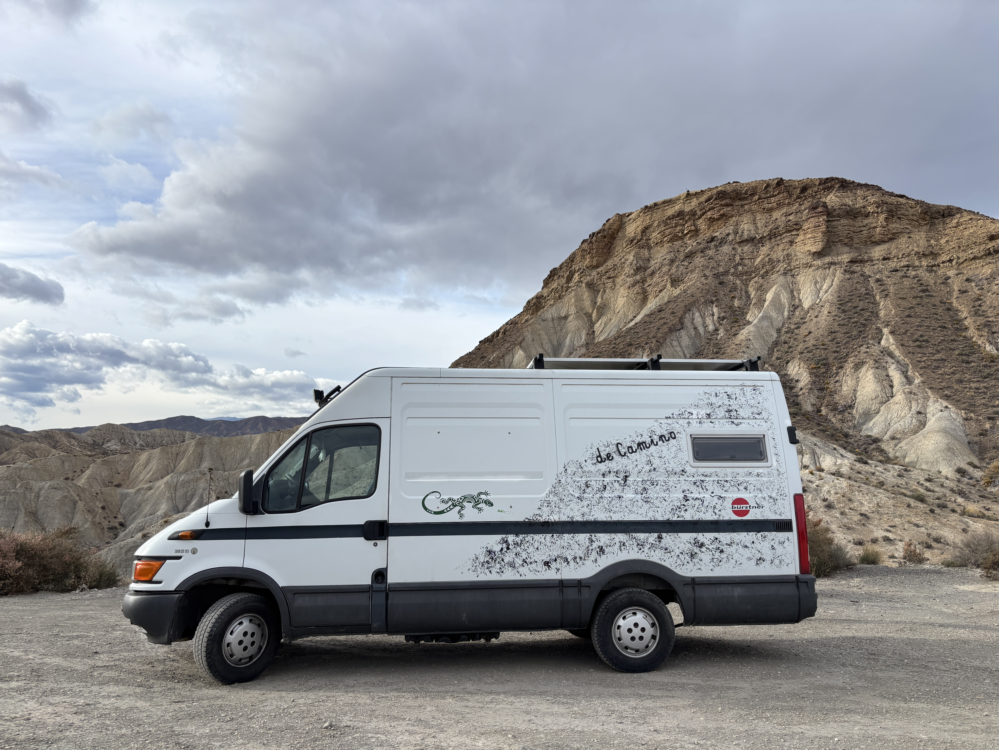
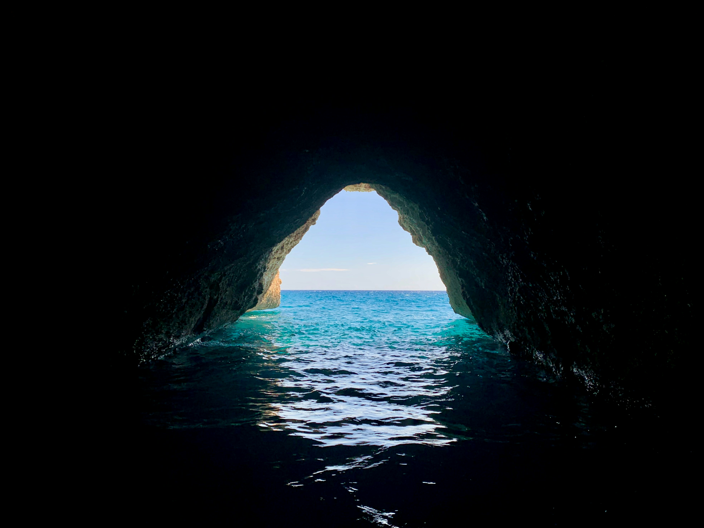
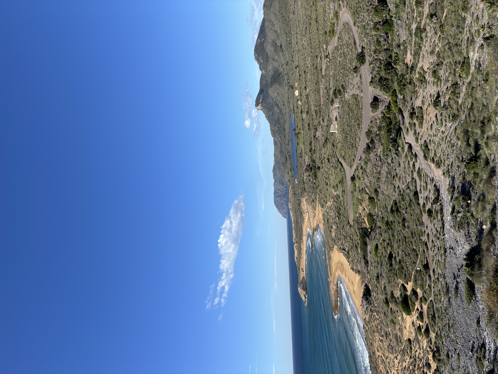

Pół roku wolności, zima stulecia i życie w drodze pośród dzikich krajobrazów
Rok po Albanii wyruszyliśmy zakupionym kamperem, w którym sami szlifowaliśmy drewniane szafy i malowaliśmy blaty. Z planowanych trzech miesięcy zrobiło się pół roku życia w drodze z bratem i dwoma psami. Trasa prowadziła przez malownicze, dzikie ostępy Europy oraz niebezpieczne górskie przełęcze.


W Hiszpanii dotarliśmy aż w okolice Gibraltaru, kąpiąc się w ukrytych jaskiniach z naturalnymi wodami termalnymi. Rano zrywałem świeży rozmaryn do herbaty, a hiszpański opanowałem na tyle, by swobodnie rozmawiać z ludźmi.
Ciekawostka naukowa: codzienna immersja językowa w realnym świecie aktywuje ośrodek Broca w mózgu o wiele skuteczniej niż lata teorii w szkolnej ławce.
Na koniec zaskoczyła nas niespotykana zima stulecia i kryzys finansowy – ratowały nas zapomniane makarony z pudła. Na hiszpańskiej autostradzie zepsuła się skrzynia biegów, blokując bieg na dwójce. Dzięki pomocy lokalnych ludzi i natychmiastowej logistyce uratowaliśmy sytuację.
